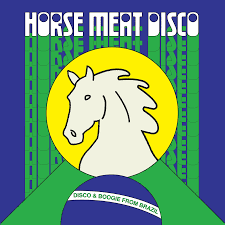

SoundVault is part music journal, part personal analytics project. I track what I listen to, catalog what I own, and write about what moves me. With over 100 records in the collection and years of streaming data to dig into, this site is my way of understanding not just what I listen to — but why. Music taste doesn't stand still and neither does this site. Come back often, there's always something new spinning.
Whether you're here to browse my physical collection, dig into my listening analytics, or just read about music I love — welcome. Pull up a chair and put something on.
From Retro Soul and Funk to Jazz Rap and Hip-Hop, and now deep into Bossa Nova and Brazilian Jazz — my music taste has taken quite the journey this year. Here's what my listening history says about me and how my ears have evolved over the past 12 months.
Read MoreWhen my fiancée handed me The Art Of Loving by Olivia Dean, I kept an open mind — even if popular artists aren't usually my first reach. I didn't expect it to quietly work its way into my regular rotation, but sometimes the best additions to your collection are the ones you didn't see coming.
See CollectionSome albums don't just sound good — they open a door to a world you didn't know existed. From Nu Genea's sun-soaked Mediterranean grooves to MonoNeon's genre-defying bass wizardry, these 5 records have sent me down some of the most rewarding rabbit holes of my listening life. If you're looking for your next obsession, you're in the right place.
Read MoreA quick snapshot of where my physical collection stands right now.
Records Found in 2025
Physical records in the collection
Top genre of the last 3 months
Most played artist of 2025
This one has been on constant rotation lately, Disco & Boogie From Brazil Vol. 1 by Horse Meat Disco — a beautifully curated dig through Brazilian disco and boogie, compiled by one of London's most respected DJ collectives. Deep grooves, thick brass, and every track feels like it was pulled from a crate that took years to find — more on this one soon.

▶ Listen on YouTube Read the Full Post